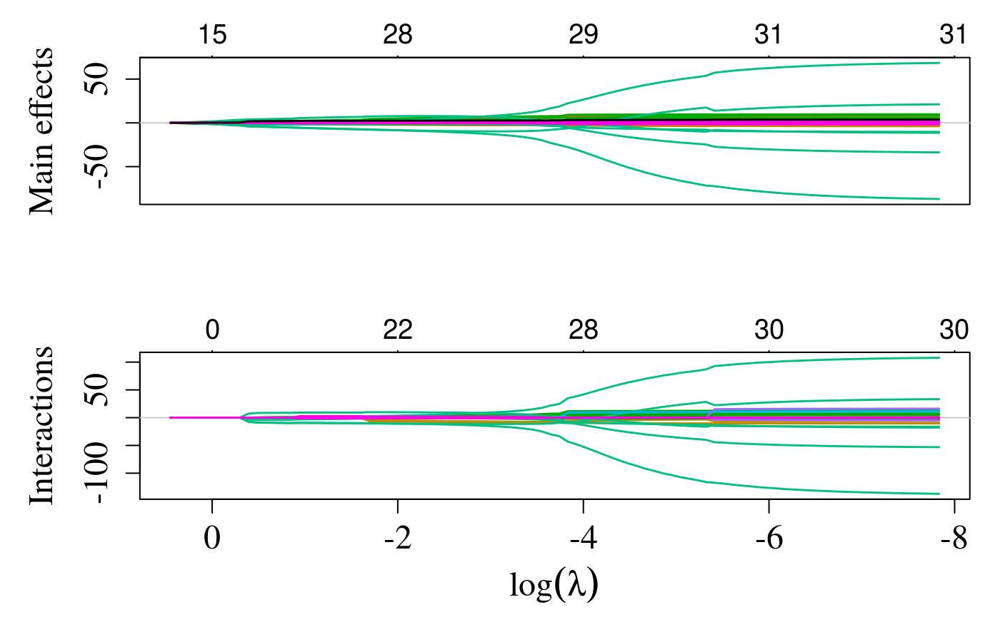
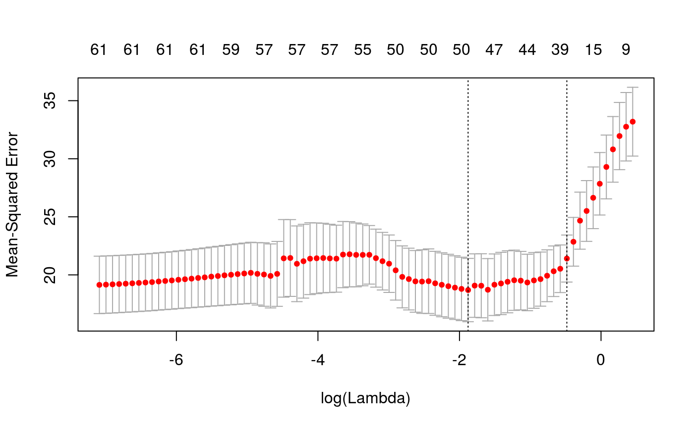

user-defined-design.RmdA limitation of the sail method is that the same basis expansion function \(f(\cdot)\) is applied to all columns of the predictor matrix \(\mathbf{X}\). Being able to automatically select linear vs. nonlinear components was not a focus of our paper, but is an active area of research for main effects only e.g. ref1 and ref2.
However, if the user has some prior knowledge on possible effect relationships, then they can supply their own design matrix. This can be useful for example, when one has a combination of categorical (e.g. gender, race) and continuous variables, but would only like to apply \(f(\cdot)\) on the continuous variables. We provide an example below to illustrate this functionality.
We use the simulated dataset sailsim provided in our package. We first add a categorical variable race to the data:
set.seed(1234)
library(sail)
x_df <- as.data.frame(sailsim$x)
x_df$race <- factor(sample(1:5, nrow(x_df), replace = TRUE))
table(x_df$race)
#>
#> 1 2 3 4 5
#> 19 19 21 22 19We then use the model.matrix function to create the design matrix. Note that the intercept should not be included, as this is added internally in the sail function. This is why we add 0 to the formula. Notice also the flexibility we can have by including different basis expansions to each predictor:
library(splines)
x <- stats::model.matrix(~ 0 + bs(X1, degree = 5) + bs(X2, degree = 3) + ns(X3, df = 8) +
bs(X4, degree = 6) + X5 + poly(X6,2) + race, data = x_df)
head(x)
#> bs(X1, degree = 5)1 bs(X1, degree = 5)2 bs(X1, degree = 5)3
#> 1 0.0001654794 0.003945507 0.0470361237
#> 2 0.2470181057 0.345144379 0.2411253263
#> 3 0.1299195522 0.007832449 0.0002360971
#> 4 0.3808392973 0.121815907 0.0194821217
#> 5 0.1737663057 0.014898419 0.0006386822
#> 6 0.1184145931 0.281407715 0.3343772913
#> bs(X1, degree = 5)4 bs(X1, degree = 5)5 bs(X2, degree = 3)1
#> 1 2.803692e-01 6.684809e-01 0.3272340
#> 2 8.422768e-02 1.176866e-02 0.3065738
#> 3 3.558391e-06 2.145244e-08 0.1896790
#> 4 1.557896e-03 4.983113e-05 0.4100900
#> 5 1.368987e-05 1.173746e-07 0.3946500
#> 6 1.986587e-01 4.721047e-02 0.3175164
#> bs(X2, degree = 3)2 bs(X2, degree = 3)3 ns(X3, df = 8)1 ns(X3, df = 8)2
#> 1 0.41274967 0.173537682 0.06566652 0
#> 2 0.04879618 0.002588901 0.00000000 0
#> 3 0.01508834 0.000400076 0.00000000 0
#> 4 0.12345871 0.012389196 0.00000000 0
#> 5 0.35302552 0.105263760 0.00000000 0
#> 6 0.05370432 0.003027827 0.00000000 0
#> ns(X3, df = 8)3 ns(X3, df = 8)4 ns(X3, df = 8)5 ns(X3, df = 8)6
#> 1 0.000000000 0.000000e+00 0.0000000 -1.589937e-01
#> 2 0.000000000 5.775107e-04 0.3179489 5.395130e-01
#> 3 0.000000000 4.989926e-03 0.4147696 4.830810e-01
#> 4 0.133404268 6.839146e-01 0.1826811 3.022366e-08
#> 5 0.000000000 8.944913e-05 0.2775548 5.564842e-01
#> 6 0.001578195 3.415384e-01 0.6070588 4.566909e-02
#> ns(X3, df = 8)7 ns(X3, df = 8)8 bs(X4, degree = 6)1 bs(X4, degree = 6)2
#> 1 4.436233e-01 -2.846296e-01 0.1820918880 0.3088147022
#> 2 1.732713e-01 -3.131078e-02 0.0120101010 0.0000608354
#> 3 1.434410e-01 -4.628144e-02 0.0002900763 0.0044075535
#> 4 7.673343e-09 -4.923233e-09 0.2978877432 0.0579746877
#> 5 1.863219e-01 -2.045032e-02 0.0114895681 0.0645689076
#> 6 1.159471e-02 -7.439189e-03 0.0102152807 0.0595722132
#> bs(X4, degree = 6)3 bs(X4, degree = 6)4 bs(X4, degree = 6)5
#> 1 2.793213e-01 1.421126e-01 3.856204e-02
#> 2 1.643482e-07 2.497444e-10 2.024070e-13
#> 3 3.571755e-02 1.628127e-01 3.958163e-01
#> 4 6.017595e-03 3.513419e-04 1.094046e-05
#> 5 1.935272e-01 3.262743e-01 2.933747e-01
#> 6 1.852831e-01 3.241534e-01 3.024572e-01
#> bs(X4, degree = 6)6 X5 poly(X6, 2)1 poly(X6, 2)2 race1 race2
#> 1 4.359896e-03 0.51332996 -0.13705545 0.09851639 0 0
#> 2 6.835086e-17 0.02643863 0.18835303 0.22584415 0 1
#> 3 4.009478e-01 0.76746637 -0.15841216 0.16140597 0 0
#> 4 1.419483e-07 0.69077618 -0.03664279 -0.07954100 0 0
#> 5 1.099135e-01 0.27718210 0.13128945 0.05620199 1 0
#> 6 1.175889e-01 0.48384748 0.08486354 -0.03559388 0 0
#> race3 race4 race5
#> 1 0 1 0
#> 2 0 0 0
#> 3 0 0 1
#> 4 0 1 0
#> 5 0 0 0
#> 6 0 0 1One benefit of using stats::model.matrix is that it returns the group membership as an attribute:
The group membership must be supplied to the sail function. This information is needed for the group lasso penalty, which will select the whole group as zero or non-zero.
sail modelWe need to set the argument expand = FALSE and provide the group membership. The first element of the group membership corresponds to the first column of x, the second element to the second column of x, and so on.
fit_design <- sail(x = x, y = sailsim$y, e = sailsim$e,
expand = FALSE,
group = attr(x, "assign"), verbose = 0)We can plot the solution path for both main effects and interactions using the plot method for objects of class sail:

In this instance, since we provided a user-defined design matrix and expand = FALSE, the numbers at the top of the plot represent the total number of non-zero coefficients.
We can use cross-validation to find the optimal value of lambda:
library(doParallel)
#> Loading required package: foreach
#> Loading required package: iterators
#> Loading required package: parallel
registerDoParallel(cores = 2)
cvfit_design <- cv.sail(x = x, y = sailsim$y, e = sailsim$e,
expand = FALSE,
dfmax = 10, # to speed up vignette build time
group = attr(x, "assign"), verbose = 0,
nfolds = 5, parallel = TRUE, nlambda = 50)We can plot the cross-validated mean squared error as a function of lambda:

The estimated coefficients at lambda.1se and lambda.min are:
cbind(coef(cvfit_design, s="lambda.1se"), # lambda.1se is the default
coef(cvfit_design, s = "lambda.min"))
#> 62 x 2 sparse Matrix of class "dgCMatrix"
#> 1 1
#> (Intercept) 5.4253975 5.40401047
#> bs(X1, degree = 5)1 -0.6899301 -0.74778821
#> bs(X1, degree = 5)2 0.1911426 1.68993883
#> bs(X1, degree = 5)3 0.4510229 1.48165273
#> bs(X1, degree = 5)4 0.7729722 1.56859507
#> bs(X1, degree = 5)5 1.8254898 3.14653210
#> bs(X2, degree = 3)1 . -1.34551165
#> bs(X2, degree = 3)2 . -2.31592314
#> bs(X2, degree = 3)3 . -1.43110420
#> ns(X3, df = 8)1 2.6276828 4.55045507
#> ns(X3, df = 8)2 2.2646976 3.20379892
#> ns(X3, df = 8)3 0.8060530 0.70088507
#> ns(X3, df = 8)4 -1.1317318 -0.32899504
#> ns(X3, df = 8)5 -1.5879515 -1.27410597
#> ns(X3, df = 8)6 -1.4845064 -1.52735344
#> ns(X3, df = 8)7 0.4838480 0.23243096
#> ns(X3, df = 8)8 -1.3282831 -1.77795193
#> bs(X4, degree = 6)1 4.9112108 7.06673607
#> bs(X4, degree = 6)2 -0.2583294 1.67099688
#> bs(X4, degree = 6)3 -5.3372680 -7.87279581
#> bs(X4, degree = 6)4 -5.4476495 -7.94157576
#> bs(X4, degree = 6)5 -2.2254989 -1.75153600
#> bs(X4, degree = 6)6 -0.1776067 -0.30481902
#> X5 . .
#> poly(X6, 2)1 . .
#> poly(X6, 2)2 . .
#> race1 -0.0433420 -0.06193825
#> race2 -0.1622336 0.05028432
#> race3 0.2570618 0.29940124
#> race4 -0.4670934 -0.84307180
#> race5 0.4156071 0.55532449
#> E 1.9929608 2.34649146
#> bs(X1, degree = 5)1:E . -0.18424671
#> bs(X1, degree = 5)2:E . 0.41638216
#> bs(X1, degree = 5)3:E . 0.36506278
#> bs(X1, degree = 5)4:E . 0.38648440
#> bs(X1, degree = 5)5:E . 0.77527056
#> bs(X2, degree = 3)1:E . -3.92381433
#> bs(X2, degree = 3)2:E . -6.75375232
#> bs(X2, degree = 3)3:E . -4.17342145
#> ns(X3, df = 8)1:E 1.3301226 3.25187237
#> ns(X3, df = 8)2:E 1.1463810 2.28951721
#> ns(X3, df = 8)3:E 0.4080208 0.50087052
#> ns(X3, df = 8)4:E -0.5728782 -0.23510833
#> ns(X3, df = 8)5:E -0.8038148 -0.91050893
#> ns(X3, df = 8)6:E -0.7514513 -1.09148610
#> ns(X3, df = 8)7:E 0.2449219 0.16610115
#> ns(X3, df = 8)8:E -0.6723717 -1.27057024
#> bs(X4, degree = 6)1:E 8.6599091 9.88383976
#> bs(X4, degree = 6)2:E -0.4555107 2.33712781
#> bs(X4, degree = 6)3:E -9.4111733 -11.01122944
#> bs(X4, degree = 6)4:E -9.6058083 -11.10742802
#> bs(X4, degree = 6)5:E -3.9242091 -2.44977328
#> bs(X4, degree = 6)6:E -0.3131728 -0.42633293
#> X5:E . .
#> poly(X6, 2)1:E . .
#> poly(X6, 2)2:E . .
#> race1:E . .
#> race2:E . .
#> race3:E . .
#> race4:E . .
#> race5:E . .The estimated non-zero coefficients at lambda.1se:
predict(cvfit_design, type = "nonzero")
#> 1
#> (Intercept) 5.4253975
#> bs(X1, degree = 5)1 -0.6899301
#> bs(X1, degree = 5)2 0.1911426
#> bs(X1, degree = 5)3 0.4510229
#> bs(X1, degree = 5)4 0.7729722
#> bs(X1, degree = 5)5 1.8254898
#> ns(X3, df = 8)1 2.6276828
#> ns(X3, df = 8)2 2.2646976
#> ns(X3, df = 8)3 0.8060530
#> ns(X3, df = 8)4 -1.1317318
#> ns(X3, df = 8)5 -1.5879515
#> ns(X3, df = 8)6 -1.4845064
#> ns(X3, df = 8)7 0.4838480
#> ns(X3, df = 8)8 -1.3282831
#> bs(X4, degree = 6)1 4.9112108
#> bs(X4, degree = 6)2 -0.2583294
#> bs(X4, degree = 6)3 -5.3372680
#> bs(X4, degree = 6)4 -5.4476495
#> bs(X4, degree = 6)5 -2.2254989
#> bs(X4, degree = 6)6 -0.1776067
#> race1 -0.0433420
#> race2 -0.1622336
#> race3 0.2570618
#> race4 -0.4670934
#> race5 0.4156071
#> E 1.9929608
#> ns(X3, df = 8)1:E 1.3301226
#> ns(X3, df = 8)2:E 1.1463810
#> ns(X3, df = 8)3:E 0.4080208
#> ns(X3, df = 8)4:E -0.5728782
#> ns(X3, df = 8)5:E -0.8038148
#> ns(X3, df = 8)6:E -0.7514513
#> ns(X3, df = 8)7:E 0.2449219
#> ns(X3, df = 8)8:E -0.6723717
#> bs(X4, degree = 6)1:E 8.6599091
#> bs(X4, degree = 6)2:E -0.4555107
#> bs(X4, degree = 6)3:E -9.4111733
#> bs(X4, degree = 6)4:E -9.6058083
#> bs(X4, degree = 6)5:E -3.9242091
#> bs(X4, degree = 6)6:E -0.3131728